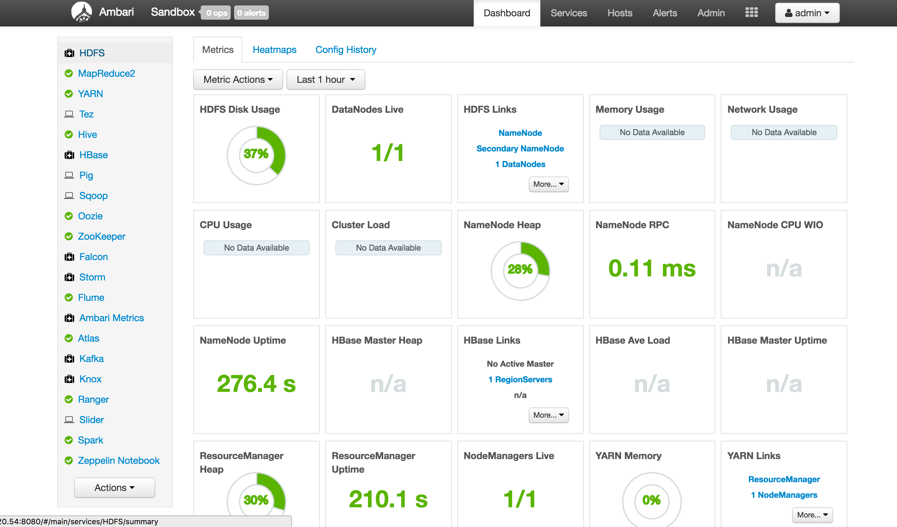
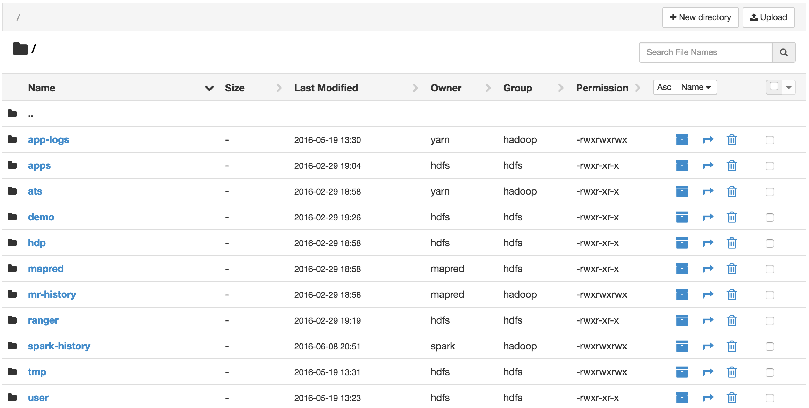
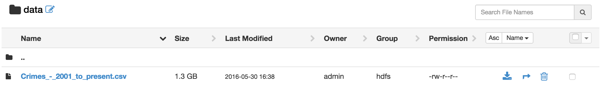
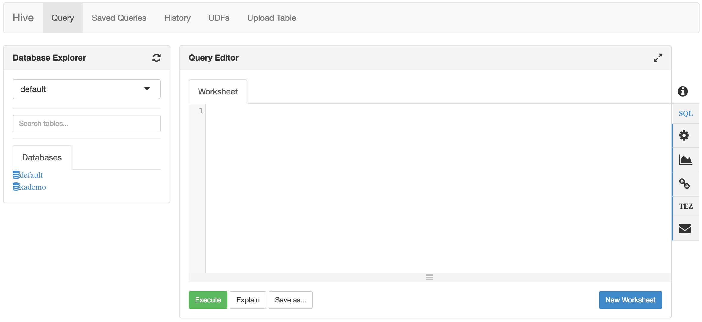
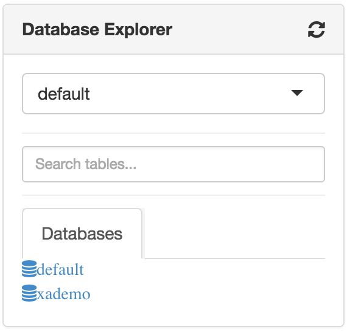
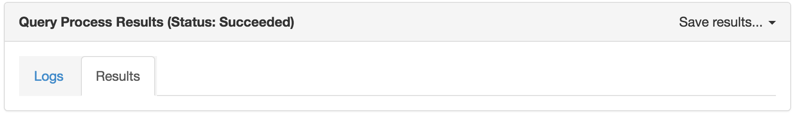
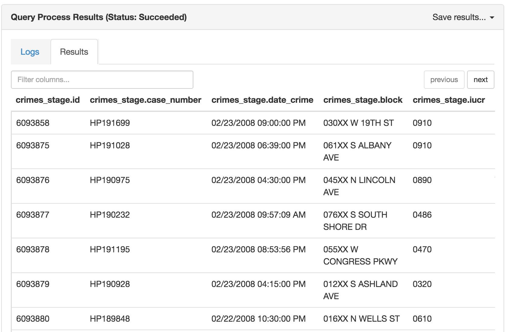
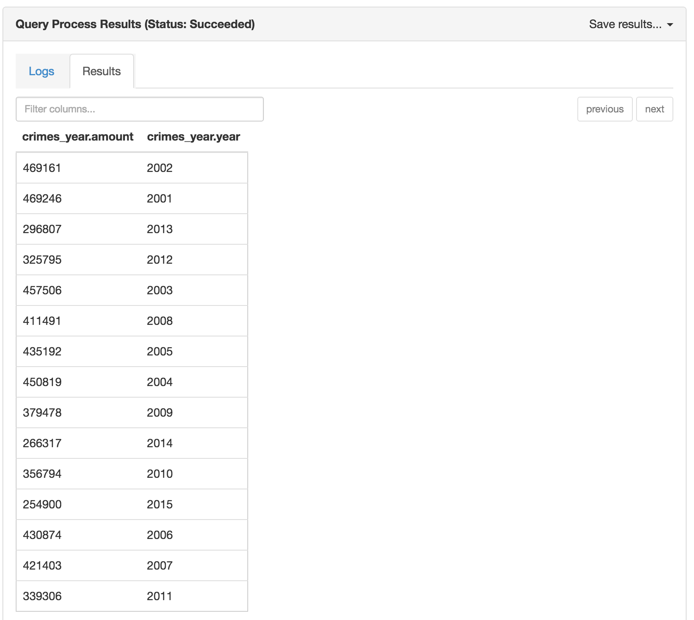
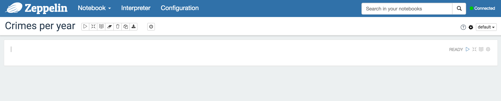
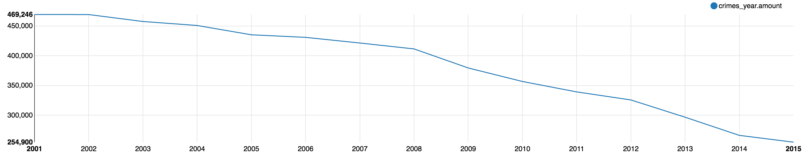

<link rel="import" href="../../../bower_components/polymer/polymer.html">
<link rel="import" href="../../../bower_components/codelab-components/google-codelab.html">
<link rel="import" href="../../../bower_components/codelab-components/google-codelab-step.html">
<link rel="import" href="../../../bower_components/iron-icons/hardware-icons.html">
<link rel="import" href="../../../bower_components/iron-icons/av-icons.html">
<link rel="import" href="../../../bower_components/iron-ajax/iron-ajax.html">
<link rel="import" href="../../../bower_components/paper-spinner/paper-spinner.html">

<dom-module id="CodeLab-Big-Data-app">
    <template>
    <style>
    :host {
        display: block;
        font-family: 'Open Sans', sans-serif;
    }

    aside {
        border-color: #6a6;
        background: #ded;
        color: #464;
    }

    aside.danger {
        border-color: #aa6666;
        background: #eedddd;
        color: #664444;
    }

    ol, ul {
        margin: 2em 0;
    }

    #moveIcon {
        transform: rotate(180deg);
    }

    </style>

    <iron-ajax
        id="getMachine"
        headers="{{apiHeaders}}"
        url="https://pf605p1hy3.execute-api.eu-west-1.amazonaws.com/prod"
        handle-as="json"
        on-response="_getMachine"></iron-ajax>

    <google-codelab title="CodeLab: Introductie in Big Data"
        last-updated="2016-06-13">
        <google-codelab-step label="Overzicht" step="1" duration="2">
            <p>
                In deze codelab krijg je een korte introductie over Big Data. Je gaat doormiddel van de
                <a href="http://Hortonworks.com/products/sandbox/" target="_blank">sandbox van Hortonworks</a> kennismaken met Hadoop en services van Hadoop.
            </p>
            <aside>
                
                <p><strong>Hortonworks</strong> is een bedrijf dat het mogelijk maakt Big Data gemakkelijk te verwerken en te onderzoeken doormiddel van hun software. Ze zijn vooral gericht op de open source community.</p>
            </aside>
            <p>
                Als het goed is heb je de presentatie gevolgd van het project Big Data aan <a href="http://han.nl" target="_blank">de Hogeschool van Arnhem en Nijmegen</a>, en
                weet je globaal wat Big Data en Hadoop zijn en wat je ermee kunt.</p>
            </p>
            <p>
                In deze codelab ga je de "crimes" dataset van de <a href="http://fbi.gov" target="_blank">FBI</a> verwerken en analyseren.
                Momenteel is deze dataset een .csv bestand met ongeveer 9 miljoen records. De dataset bevat alle gemelde misdaden in de Verenigde Staten
                vanaf het jaar 2001 tot en met het jaar 2015.
            </p>
            <p>
                Het uiteindelijke doel van deze codelab is om een grafiek te genereren die de trend aangeeft over het aantal misdrijven.
                Deze grafiek gaat aangeven of het aantal misdrijven meer is geworden, minder is geworden, of gelijk is gebleven door de jaren heen.
            </p>

            <h2>Volgende stap</h2>
            <p>
                Om te kunnen werken met de sandbox van Hortonworks dien je eerst in te loggen bij een virtual machine. Dit gebeurt in de volgende stap.
            </p>
        </google-codelab-step>
        <google-codelab-step label="Verken de sandbox" step="2" duration="4">
            <p>
                Om gemakkelijk en snel met Big Data te kunnen werken gebruik je de sandbox van Hortonworks.
                De sandbox is eigenlijk een virtual machine distributie waar Hadoop en al zijn services op zijn geïnstalleerd.
            </p>

            <h2>Jouw persoonlijke Hortonworks sandbox credentials:</h2>
            <p>
                <template is="dom-if" if="{{!machineIP}}">
                    <template is="dom-if" if="{{noMoreMachines}}">
                        <aside class="danger">
                            <p>
                                Momenteel zijn er geen virtual machines meer beschikbaar.
                            </p>
                        </aside>
                    </template>
                    <template is="dom-if" if="{{!noMoreMachines}}">
                        <paper-spinner active></paper-spinner>
                    </template>
                </template>
                <template is="dom-if" if={{machineIP}}>
                    <table>
                        <tr>
                            <td><strong>Sandbox IP</strong></td>
                            <td><a href="http://{{machineIP}}:8080" target="_blank">http://{{machineIP}}:8080</a></td>
                        </tr>
                        <tr>
                            <td><strong>Gebruikersnaam</strong></td>
                            <td>maria_dev</td>
                        </tr>
                        <tr>
                            <td><strong>Wachtwoord</strong></td>
                            <td>maria_dev</td>
                        </tr>
                    </table>
                </template>

                <ol type="1" start="1">
                    <li>Navigeer naar het bovenstaande IP adres</li>
                    <li>Log in met de bovenstaande gebruikersnaam en wachtwoord</li>
                </ol>

                <aside>
                    <p>
                        <iron-icon icon="info"></iron-icon> Wanneer je problemen ondervindt met het inloggen in de sandbox kan je één van de projectleden om hulp vragen.
                    </p>
                </aside>
            </p>

            <p>
                Wanneer je succesvol bent ingelogd in de sandbox zal je het volgende scherm te zien krijgen.
            </p>
            
            <p>
                Dit is het Ambari dashboard. Ambari is één van de services van Hadoop en is een web interface om gemakkelijk met Hadoop te werken.
                Op de huidige pagina staan vooral statistieken van de capaciteit van het huidige cluster. Momenteel kan je niet praten over een cluster van machines aangezien deze sandbox momenteel op één virtual machine draait.
                Wanneer je met de muis over de vakken heen beweegt, verschijnt er meer informatie over het desbetreffende onderdeel.
            </p>
            <p>
                Aan de linkerkant van het dashboard staan alle Hadoop services die momenteel zijn geïnstalleerd binnen Hadoop.
                Voor meer informatie over de betreffende services, kan je het onderzoeksverslag lezen. Deze wordt meegegeven aan het eind van deze sessie.
            </p>

            <h2>Volgende stap</h2>
            <p>
                In de volgende stap ga je leren waar Big Data kan worden opgeslagen binnen Hadoop.
            </p>
        </google-codelab-step>

        <google-codelab-step label="HDFS" step="3" duration="4">
            <p>
                Hadoop Distributed File System (afgekort HDFS) is de opslag van alle data binnen Hadoop.
                Je kan dus HDFS gebruiken om de Big Data op te slaan. Andere services gebruiken HDFS om de Big Data die daar staat opgeslagen te verwerken.
                De data die binnen HDFS staat kan worden verdeeld over meerdere machines.
            </p>
            <aside>
                <p>
                    Voor meer informatie over HDFS kan je ons onderzoek naar Big Data lezen of <a href="http://Hortonworks.com/apache/hdfs/" target="_blank">deze bron</a> bezoeken.
                </p>
            </aside>

            <p>
                We hebben de crimes dataset al voor je op de virtual machine geplaatst. Nu ga je bekijken waar deze te vinden is.

                <ol type="1" start="1">
                    <li>Klik rechtsboven op het snelmenu aangegeven met dit icoon <iron-icon icon="apps"></iron-icon></li>
                    <li>Selecteer "HDFS Files" om naar de HDFS interface te navigeren</li>
                </ol>
            </p>

            <p>
                Je ziet dit scherm verschijnen:
                
            </p>

            <p>
                Dit zijn alle bestanden die momenteel in Hadoop staan. Dus ook de installatiebestanden van Hadoop zelf.
            </p>
            <p>
                Om naar de crimes dataset te navigeren, moet je het volgende navigatiepad volgen.
                <ol type="1" start="1">
                    <li>
                        <code>tmp</code> <iron-icon icon="chevron-right"></iron-icon> <code>maria_dev</code> <iron-icon icon="chevron-right"></iron-icon> <code>data</code>
                    </li>
                </ol>
                Hier staat crimes dataset momenteel opgeslagen.
                
            </p>

            <h2>Volgende stap</h2>
            <p>
                We weten nu waar alle bestanden worden opgeslagen binnen Hadoop. In de volgende stap gaan we verder met Hive en zien we hoe Big Data verwerkt kan worden.
            </p>
        </google-codelab-step>

        <google-codelab-step label="Verwerk data met Hive" step="4" duration="15">
            

            <p>
                Apache Hive is een data warehouse infrastructuur gebouwd op Hadoop met als doel: data verwerking, queries, en analyse. Hive is ontwikkeld door Facebook. Momenteel wordt Hive gebruikt en ontwikkeld door bedrijven als NetFlix en "Financial Industry Regulatory Authority (FINRA)".
            </p>
            <p>
                Jij gaat Hive vooral gebruiken om queries te bouwen, zodat de data (die momenteel nog in een .csv in HDFS staat) makkelijker te verwerken is.
                Dit doe je door van het .csv bestand een tabel te maken die in Hive komt te staan.
            </p>
            <aside>
                <p>
                    Hive lijkt heel erg op SQL en het is mogelijk dat je bepaalde syntax herkent in Hive die overeenkomt met SQL.
                </p>
            </aside>

            <h2>Maak een stage tabel aan voor de dataset</h2>
            <p>
                De eerste stap die je doet is een stage tabel aanmaken. Dit is een tabel die je op basis van de structuur van de data aanmaakt.
                Hier zal dan ook de .csv dataset worden ingeladen. Andere queries die je zometeen gaat maken kunnen inhaken op deze stage tabel.
            </p>
            <p>
                Om een stage tabel aan te maken van de crimes dataset moet je deze stappen doorlopen.
                <ol type="1" start="1">
                    <li>Selecteer uit het dropdown menu (te benaderen door op <iron-icon icon="apps"></iron-icon> rechtsboven te klikken) "Hive View"</li>
                </ol>
                Dit resulteert in het volgende scherm.
                

                Nu je in de query editor van Hive zit kan je starten met het typen van een query. In dit geval starten we met het aanmaken van een nieuwe stage tabel.
            </p>
            <p>
                Type de volgende code over in de query editor om een nieuwe stage tabel aan te maken.
                <pre>
                    <code>
                        <span>
CREATE TABLE crimes_stage (id bigint, case_number string, date_crime string, block string, iucr string, primary_type string, description string, location_description string, arrest boolean, domestic boolean, beat boolean, district bigint, ward bigint, community_area bigint, fbi_code string, x_coordinate string, y_coordinate string, year bigint, updated_on string, latitude string, longitude string)
ROW FORMAT DELIMITED
FIELDS TERMINATED BY ','
STORED AS TEXTFILE
TBLPROPERTIES ("skip.header.line.count"="1");
                        </span>
                    </code>
                </pre>
            </p>

            <p>
                <ul>
                    <li><code>CREATE TABLE crimes_stage</code> Maakt een nieuwe tabel aan genaamd "crimes_stage"</li>
                    <li>
                        De crimes dataset bestaat uit de volgende kolommen: <code>id</code> <code>case_number</code> <code>case_number</code> <code>block</code> <code>iucr</code> <code>primary_type</code> <code>description</code> <code>location_description</code> <code>arrest</code> <code>domestic</code> <code>beat</code> <code>district</code>
                         <code>ward</code> <code>community_area</code> <code>fbi_code</code> <code>x_coordinate</code> <code>y_coordinate</code> <code>year</code> <code>updated_on</code> <code>latitude</code> <code>longitude</code>
                         Deze worden aangegeven bij het CREATE TABLE command.
                    </li>
                    <li><code>ROW FORMAT DELIMITED FIELDS TERMINATED BY ","</code> Geeft aan dat ieder dataveld wordt gescheiden met een "," in het .csv bestand.</li>
                    <li><code>STORED AS TEXTFILE</code> De data wordt opgeslagen binnen Hive als "plain text".</li>
                    <li><code>TBLPROPERTIES ("skip.header.line.count"="1");</code> Geeft aan dat de eerste rij in het .csv bestand wordt overgeslagen. De eerste rij in deze dataset zijn de kolomnamen. Deze wil je niet in Hive opslaan.</li>
                </ul>
            </p>
            <p>
                Wanneer je deze query hebt ingevoerd kan je op de groene "Execute" knop drukken. Hive gaat nu de query uitvoeren en start verschillende MapReduce jobs op om dit te voltooien.
            </p>
            <aside>
                <p>Om meer over MapReduce te weten te komen kan je het beste ons onderzoeksverslag lezen naar Big Data of <a href="http://Hortonworks.com/apache/mapreduce/" target="_blank">deze bron</a> bezoeken.</p>
            </aside>

            <p>
                Wanneer Hive klaar is met de query wordt dit aangegeven.
            </p>
            <p>
                Aan de linkerkant van de Hive View is een overzicht te zien van de verschillende databases binnen Hive.
                
            </p>
            <ol type="1" start="1">
                <li>Ververs het data overzicht door op het <iron-icon icon="cached"></iron-icon> icoon te drukken</li>
                <li>Open de <code>default</code> database</li>
                <li>Je ziet nu "crimes_stage" staan tussen de voorbeeldtabellen</li>
                <li>Druk nu op <iron-icon icon="list"></iron-icon> rechts naast de "crimes_stage" tabel</li>
            </ol>

            <p>
                Hive probeert nu de volgende query uit te voeren <code>SELECT * FROM crimes_stage LIMIT 100;</code>
                Wanneer je naar het "Query Process Results" scherm kijkt en je drukt op "Results" zie je niks staan.
                
                Dit komt omdat de dataset momenteel nog niet in de tabel staat. Dit gaan we nu doen.
            </p>

            <h2>Verplaats de dataset naar de Hive tabel</h2>
            <ol type="1" start="1">
                <li>Navigeer naar de HDFS Files</li>
                <li>Navigeer naar de dataset (te vinden op: <code>tmp</code> <iron-icon icon="chevron-right"></iron-icon> <code>maria_dev</code> <iron-icon icon="chevron-right"></iron-icon> <code>data</code>)</li>
                <li>Klik nu op het volgende icoon <iron-icon id="moveIcon" icon="hardware:keyboard-return"></iron-icon> bij de "Crimes_-_2001_to_present.csv" dataset. Dit zet de dataset in een verplaatsstatus.</li>
                <li>Navigeer naar <code>/</code> <iron-icon icon="chevron-right"></iron-icon> <code>apps</code> <iron-icon icon="chevron-right"></iron-icon> <code>hive</code> <iron-icon icon="chevron-right"></iron-icon> <code>warehouse</code> <iron-icon icon="chevron-right"></iron-icon> <code>crimes_stage</code></li>
                <li>Je ziet de dataset nu staan. Deze moet nog worden geplakt. Dit kan je doen door op het <iron-icon icon="content-paste"></iron-icon> icoon te klikken.</li>
            </ol>

            <p>
                Nu de dataset is verplaatst naar een Hive tabel, kan je het resultaat vinden in de <code>Hive View</code>

                <ol type="1" start="1">
                    <li>Navigeer naar Hive View (te benaderen door op <iron-icon icon="apps"></iron-icon> rechtsboven te klikken)</li>
                    <li>Open de <code>default</code> database</li>
                    <li>Druk nu op <iron-icon icon="list"></iron-icon> rechts naast de "crimes_stage" tabel</li>
                </ol>

                Je ziet nu de volgende resultaten in de result tab van het "Query Process Results" scherm.
                
                Dit betekent dat de data succesvol in de Hive tabel is gezet.
            </p>

            <h2>Maak een Optimized Row Columnar (ORC) tabel</h2>
            <p>
                Je hebt nu een stage tabel gemaakt door een query te schrijven binnen Hive. Om complexe queries los te laten op deze data willen we ORC toepassen.
                Door een ORC tabel van de stage tabel te maken beïnvloeden we de tijd die nodig is voor een query. Hierdoor worden onze queries veel sneller.
            </p>

            <p>
                Voer de volgende query uit in een nieuwe "worksheet" in Hive View. Deze query duurt ongeveer anderhalve minuut.
            </p>
            <pre>
                <code>
                    <span>
CREATE TABLE crimes STORED AS ORC AS SELECT * FROM crimes_stage;
                    </span>
                </code>
            </pre>
            <p>
                Deze query maakt een nieuwe tabel aan die "crimes" heet. Deze tabel is opgeslagen als een ORC tabel. De tabel kopieert alle data uit "crimes_stage".
            </p>

            <h2>Selecteer crimes per jaar</h2>
            <p>
                Nu er een nieuwe tabel genaamd "crimes" is aangemaakt kunnen we deze tabel gebruiken om vervolgqueries te schrijven.
                Voor de use case willen we graag een trend kunnen weergeven van alle crimes in de loop van de jaren. Hiervoor hebben we dus alle crimes gegroepeerd per jaar nodig.

                Om deze data te krijgen voer je de volgende query uit in een nieuwe "worksheet" in Hive View.
            </p>
            <pre>
                <code>
                    <span>
CREATE TABLE crimes_year
STORED AS ORC
AS
SELECT COUNT(id) AS amount, year
FROM crimes
WHERE year < 2016 AND year > 1980
GROUP BY year;
                    </span>
                </code>
            </pre>

            <ul>
                <li><code>CREATE TABLE crimes_year</code> Maak een nieuwe tabel aan genaamd "crimes_year".</li>
                <li><code>STORED AS ORC</code> Sla deze tabel op als Optimized Row Columnar.</li>
                <li><code>AS</code> De content van de tabel moet het resultaat bevatten van de query die na <code>AS</code> komt.</li>
                <li><code>SELECT COUNT(id) AS amount, year</code> Tel het aantal crimes op basis van het id en noem het "amount". Daarnaast wil je ook graag het jaar ophalen.</li>
                <li><code>FROM crimes</code> Haal deze data uit de tabel "crimes" op.</li>
                <li><code>WHERE year < 2016 AND year > 1980</code> Hier filter je slechte data uit de dataset. Data met bijvoorbeeld een jaar als 2343112, omdat er iets mis is gegaan bij het inladen.</li>
                <li><code>GROUP BY year</code> Groepeer de data op basis van het jaar.</li>
            </ul>

            <p>
                Nadat je deze query hebt uitgevoerd duurt het ongeveer één minuut tot Hive klaar is.
                Wanneer Hive klaar is met het uitvoeren van deze code kan je het resultaat bekijken.

                <ol type="1" start="1">
                    <li>Ververs het data overzicht door op het <iron-icon icon="cached"></iron-icon> icoon te drukken</li>
                    <li>Open de <code>default</code> database</li>
                    <li>Je ziet nu "crimes_year" staan tussen de voorbeeldtabellen</li>
                    <li>Druk nu op <iron-icon icon="list"></iron-icon> rechts naast de "crimes_stage" tabel</li>
                </ol>

                Je krijgt nu het volgende resultaat te zien
                
            </p>

            <h2>Volgende stap</h2>
            <p>
                Door het aanmaken van de tabel "crimes_year" is deze data opgeslagen, en kunnen we deze data met een andere Hadoop service visualiseren door deze om te zetten in grafieken.
                Dit ga je realiseren met een service genaamd Zeppelin.
            </p>
        </google-codelab-step>

        <google-codelab-step label="Genereer grafieken" step="5" duration="5">
            
            <p>
                Je hebt in de vorige stap een tabel gegenereerd die weergeeft hoeveel misdrijven er per jaar zijn geweest. Wat je in deze stap wilt doen, is deze tabel omzetten in een grafiek.
                Hierdoor creëer je een beter beeld van hoe de trend loopt. Je gaat dit realiseren door gebruik te maken van Zeppelin.
                Zeppelin draait in de sandbox van Hortonworks en is een service die data die uit Hadoop komt kan visualiseren.
            </p>

            <aside>
                <p>Om meer over Zeppelin te weten te komen kan je het beste ons onderzoeksverslag lezen naar Big Data of <a href="http://Hortonworks.com/apache/zeppelin/" target="_blank">deze bron</a> bezoeken.</p>
            </aside>

            <h2>Navigeer naar de Zeppelin web interface en open een note</h2>
            <ol type="1" start="1">
                <li>Navigaar naar <a href="http://{{machineIP}}:9995" target="_blank">http://{{machineIP}}:9995</a> om de web interface van Zeppelin te openen</li>
                <li>Klik op "Create a new note"</li>
                <li>Noem deze "Crimes per year"</li>
                <li>Klik op de knop "Create Note"</li>
            </ol>

            <p>
                Je ziet nu het volgende scherm.
                
            </p>

            <h2>Genereer een grafiek van "crimes_year"</h2>
            <p>In het lege witte vlak zet je de volgende code neer:</p>
            <pre>
                <code>
                    <span>
%hive
SELECT * FROM crimes_year
                    </span>
                </code>
            </pre>

            <ul>
                <li><code>%hive</code> Dit geeft aan de "interpreter" van Zeppelin aan dat de data wordt opgehaald van Hive en dat de Hive syntax wordt gebruikt.</li>
                <li><code>SELECT * FROM crimes_year</code> Selecteer alles van de crimes_year tabel.</li>
            </ul>

            <aside>
                <p>
                    Omdat Zeppelin in de Sandbox is gelinkt met Hive is er geen extra link nodig tussen Zeppelin en Hive.
                </p>
            </aside>

            <ol type="1" start="1">
                <li>Druk op het <iron-icon icon="av:play-arrow"></iron-icon> icoon naast "READY" om de code uit te voeren</li>
                <li>Wacht tot de code is uitgevoerd</li>
                <li>Klik op het volgende logo <iron-icon icon="trending-up"></iron-icon> om de grafiek te tonen</li>
                <li>Klik op "settings" om de eigenschappen van de grafiek aan te passen</li>
                <li>Haal de huidige "Keys" en "Values" weg</li>
                <li>Sleep <code>crimes_year.year</code> naar "Keys"</li>
                <li>Sleep <code>crimes_year.amount</code> naar "Values"</li>
            </ol>

            <p>
                Wanneer je alle stappen correct hebt uitgevoerd, krijg je de volgende grafiek te zien.
                
            </p>

            <p>
                Je kan uit deze grafiek concluderen dat het aantal misdrijven in de Verenigde Staten sinds 2001 is afgenomen met bijna 50%.
            </p>
        </google-codelab-step>

        <google-codelab-step label="Bedankt!" step="6" duration="0">
            <p>Je hebt in deze workshop kennis gemaakt met de mogelijkheden van Hadoop. Je hebt uit een voor het mens niet te analyseren .csv file waardevolle informatie gehaald.
                Door infrastructuur limieten was deze dataset aan de kleine kant (1.7GB, ongeveer 7 miljoen record). Zou je de infrastructuur vergroten, dan kan je dezelfde workshop toepassen op een dataset van bijvoorbeeld 800 TB.</p>

            <h2>Wat je nog meer hebt geleerd tijdens deze workshop</h2>
            <ul>
                <li>Kennis gemaakt met de sandbox van Hortonworks</li>
                <li>Hoe HDFS in de praktijk werkt</li>
                <li>Hoe je kan werken met Hive en hoe Big Data te verwerken is</li>
                <li>Hoe je van deze verwerkte data grafieken kan genereren met Zeppelin</li>
            </ul>

            <h2>Wil je nog meer leren? En nog meer experimenteren?</h2>
            <ul>
                <li><a href="http://Hortonworks.com/hadoop-tutorial/learning-the-ropes-of-the-Hortonworks-sandbox/" target="_blank">Bekijk de tutorials van Hortonworks over Hadoop met hun sandbox</a></li>
                <li>Lees het onderzoek over Big Data. Deze is meegeleverd in de goodybag</li>
            </ul>
        </google-codelab-step>
</google-codelab>

</template>

<script>
Polymer({

    is: 'CodeLab-Big-Data-app',

    properties: {
        machineIP: {
            type: String,
            value: null
        },

        noMoreMachines: {
            type: Boolean,
            value: false
        },

        apiHeaders: {
            type: Object,
            value: {"x-api-key": "jQOrXitGQv6Uktl22EvDhr7VyNcI2ye46uzWvqfi"}
        }
    },

    attached: function () {
        if(Boolean(this._getCookie()) === true) {
            this.machineIP = this._getCookie();
        } else {
            this.$.getMachine.generateRequest();
        }
    },

    _getCookie: function() {
        var ca = document.cookie.split(';');
        for(var i = 0;i < ca.length; i++) {
            var c = ca[i];
            while (c.charAt(0) == ' ') c = c.substring(1,c.length);
            if (c.indexOf('machine=') === 0) return c.substring('machine='.length,c.length);
        }
        return null;
    },

    _setCookie: function (cookieValue, days) {
        var expires;
        if (days) {
            var date = new Date();
            date.setTime(date.getTime()+(days*24*60*60*1000));
            expires = "; expires="+date.toGMTString();
        }
        else {
            expires = "";
        }
        document.cookie = 'machine'+"="+cookieValue+expires+"; path=/";
    },

    _getMachine: function (e, detail) {
        var machine = detail.response;
        if(machine !== null) {
            this.set('machineIP', machine);
            this._setCookie(machine, 31);
        } else {
            this.set('noMoreMachines', true);
        }
    }
});
</script>
</dom-module>
